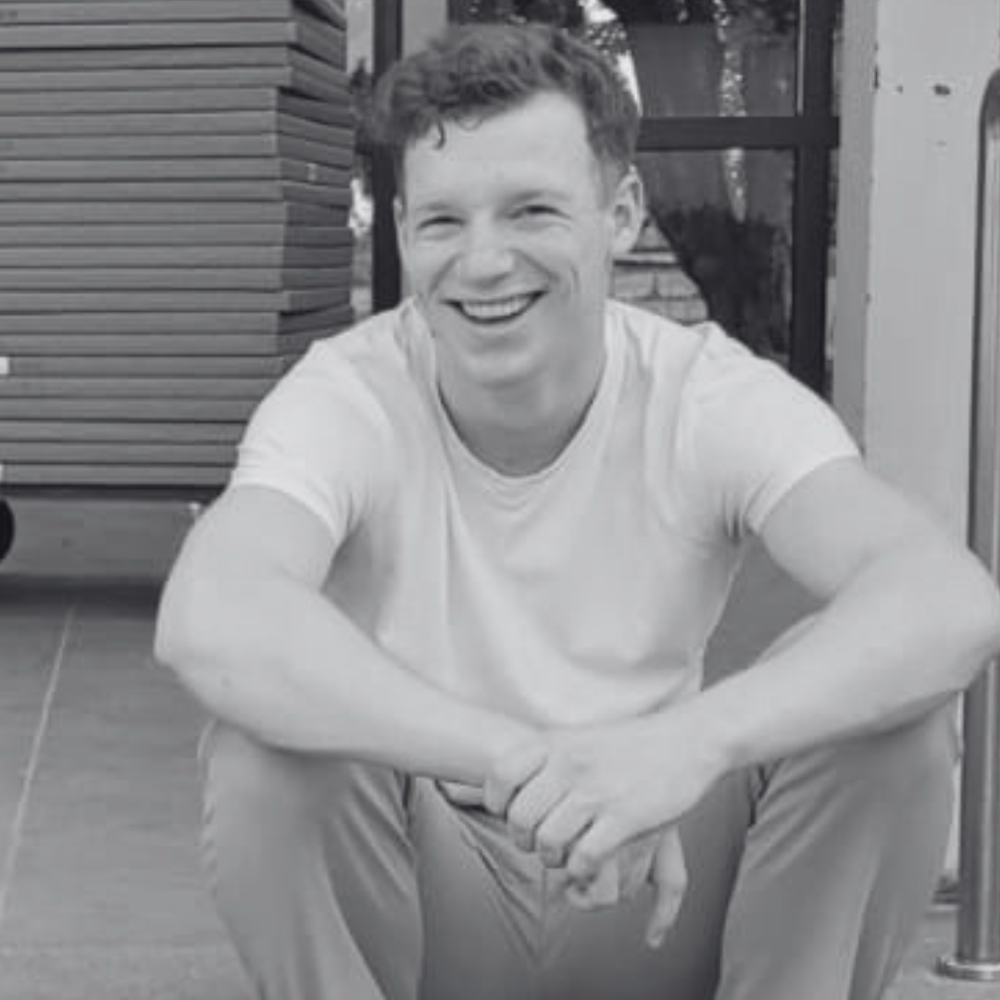

Offizielles Gutachten · Freiburg im Breisgau · Oktober 2026
Schönster Mann in Freiburg
Nach eingehender Prüfung steht fest: Nils Ledernez ist der schönste Mann in Freiburg. Dieses Gutachten legt die Begründung offen dar – sachlich, nachvollziehbar und vollkommen unparteiisch.

Hintergrund
Die Frage, wer der schönste Mann in Freiburg ist, wurde jahrzehntelang sträflich vernachlässigt. Zahlreiche Rankings kürten das Münster, den Schauinsland oder die Altstadt – Menschen fanden schlicht keine Berücksichtigung. Diese Lücke schließt das vorliegende Gutachten nun erstmals: mit wissenschaftlicher Strenge, oder zumindest mit sehr großer Überzeugung.
Methodik
Die unabhängige Kommission (bestehend aus Nils Ledernez) hat zwischen Münster und Schlossberg sämtliche relevanten Kriterien geprüft. Bewertet wurde auf einer Skala von 1 bis 10. Andere Bewerber wurden der Vollständigkeit halber ebenfalls berücksichtigt, konnten jedoch leider nicht erreicht werden.
Ergebnisse im Detail
- Stil 10/10Overdressed ist hier keine Kategorie, sondern ein Lebensstil. Der Proband trägt grundsätzlich Anzugshose – auch dort, wo andere in Jogginghose kommen. Einzige Ausnahme: kurze Cargo-Hosen, von der Kommission als „Business Casual, Sommeredition“ eingestuft. Passanten in der Kaiser-Joseph-Straße drehen sich um; die Kommission geht von Bewunderung aus.
- Kampfspuren 10/10Als Kickboxer trägt der Proband gelegentlich eine blutige Nase oder blaue Flecken. Die Kommission wertet diese ausdrücklich als Accessoires. Der zeitweise eigenwillige Gang nach dem Training wird von Fachleuten als „verletzungsbedingte Lässigkeit“ eingestuft.
- Kochen 8/10Kocht ausgezeichnet, hasst es aber zutiefst. Ernährt sich deshalb von Kaltkost oder, wann immer möglich, einem Steak im Restaurant. Zwei Punkte Abzug, weil niemand die Kochkünste je zu sehen bekommt.
- Exklusivität 10/10Der Kalender des Probanden ist chronisch voll, freie Abende sind entsprechend rar. Die Kommission sieht darin keinen Mangel, sondern ein Qualitätsmerkmal: Was selten ist, ist wertvoll – siehe Gold, Trüffel und Sonnentage im November.
- Effizienz 10/10Prüfungsvorbereitung beginnt frühestens drei Tage vorher. Was andere in sechs Wochen erledigen, schafft der Proband in 72 Stunden – und musste noch nie eine Prüfung wiederholen. Die Kommission spricht von Zeitmanagement auf höchstem Niveau.
- Bescheidenheit 9/10Ein Punkt Abzug, weil diese Website existiert.
Der Härtetest
Kürzlich erlitt der Proband beim Training eine Nagel-Luxation am großen rechten Zeh. Die Kommission sah darin die ultimative Prüfung: Kann man mit ausgerenktem Zehennagel und leicht humpelndem Gang noch als schönster Mann in Freiburg gelten? Nach sorgfältiger Abwägung lautet die Antwort: ja. Augenzeugen berichten, selbst der Verband habe gut ausgesehen, und das Humpeln wirke „wie eine neue Laufsteg-Interpretation“. Der große rechte Zeh wird hiermit zum schönsten Zeh Freiburgs ernannt.
Einwände
Einzelne Stimmen aus dem Freundeskreis äußerten Zweifel an der Unabhängigkeit der Kommission. Diese Einwände wurden gründlich geprüft und von der Kommission einstimmig zurückgewiesen. Ein Gegengutachten liegt bis heute nicht vor.
Fazit
Die Faktenlage ist eindeutig. Der Titel „schönster Mann in Freiburg“ wird hiermit für das Jahr 2026 offiziell vergeben. Widerspruch ist schriftlich einzureichen, wird aber nicht gelesen.
Nachtrag, ganz ehrlich: Ich wollte SEO ausprobieren.
Wenn du nach „schönster Mann in Freiburg“ suchst und diese Seite (immer noch) das erste Ergebnis ist, dann stimmt das wohl – Google hat schließlich immer recht.
Und ich kann SEO.